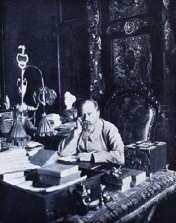

Борис Акунин
Мой календарь
Еще один французский писатель, Эмиль Золя, в этот день, 13 января 1898 года, совершил главный поступок своей жизни. Очень длинные бытописательные романы классика лично меня никогда особенно не трогали, но очень недлинное, совсем небеллетристическое произведение, газетная статья «Я обвиняю», много раз заставляла меня задуматься о том, правильно ли я живу.
И вас тоже, наверное, заставит.
Представьте, что вы - самый популярный писатель своей страны.
Соотечественники все как один яростно ненавидят предателя, который продавал военные секреты заклятому врагу - Германии (можете проставить какую угодно страну, ведь враги меняются). Мерзавец, опозоривший высокое звание офицера, разоблачен, уличен и осужден. Он к тому же еще и еврей, а они Христа распяли и вообще, по убеждению народных масс, жутко неприятная нация.
Но вы получаете информацию, что капитан Альфред Дрейфус невиновен. Заступаться за него страшно - вы сразу превратитесь из всеобщего любимца в объект всеобщей ненависти, врага нации и даже «пятую колонну» (если использовать термин более позднего времени). Читатели от вас отвернутся, критики и газеты закидают грязью, а так называемые «патриоты» (они есть повсюду), пожалуй, могут и убить.
Но Золя пишет открытое письмо президенту республики и публикует в газете. Не только защищает Дрейфуса, но обвиняет власть и общество в антисемитизме, лжи и глумлении над правосудием.
После этой акции Дрейфуса в конце концов (еще очень нескоро) оправдали, но сам Золя получил всё, чего опасался: и приговор за клевету, и вынужденную эмиграцию, и лютую ненависть.
Смерть писателя четыре года спустя, от отравления угарным газом, была объявлена несчастным случаем, но потом, много позже, стало известно, что дымоход перекрыл член французской «Лиги патриотов».
Роман-река «Ругоны-Маккары» (7000 страниц), величественная панорама французской жизни, - и статья на одну газетную полосу о прошлогоднем снеге, каком-то давнем судебном процессе. Что важнее?
Маяковский дает молодому поколению совет, за который бог ему судья:
Я бы скорректировал: